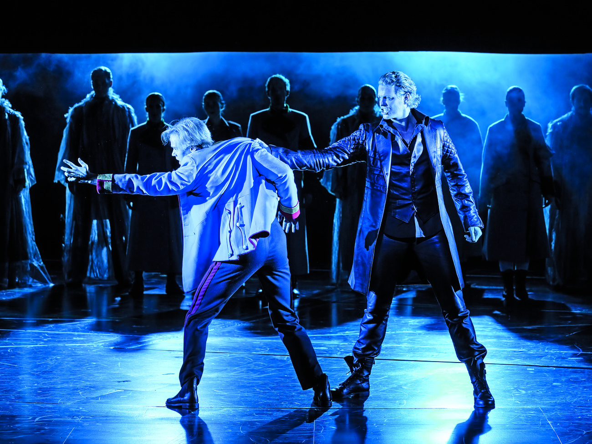
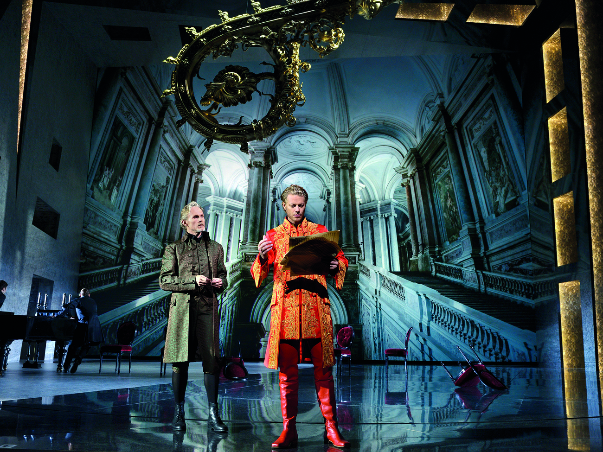
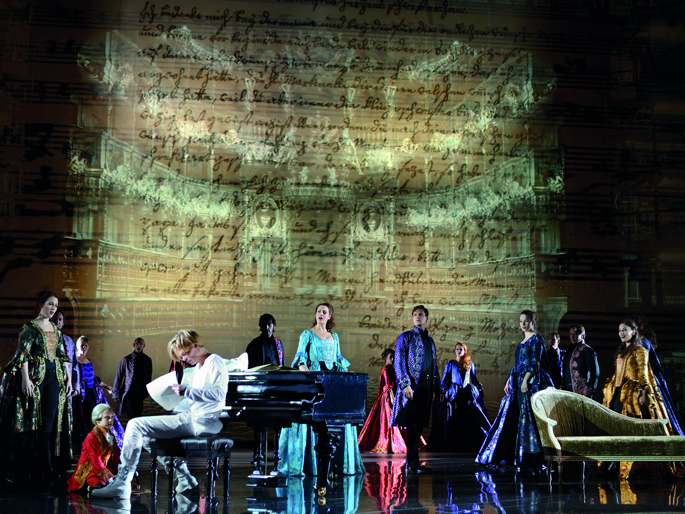
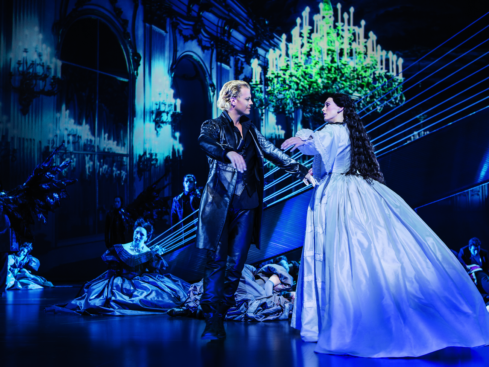

Back
_
1. 
A. Warum kannst du mich nicht lieben?
B. Die Schatten werden länger (Reprise)
C. Der einfache Weg
D. Gott, warum?
_
2. 
A. Der letzte Tanz
B. Wenn ich dein Spiegel wär
C. Wie kann es möglich sein
D. Der einfache Weg
_
3.
A. Rebecca (Reprise)
B. Wenn ich tanzen will
C. Jenseits der Nacht
D. Der Schleier fällt
_
4. 
A. Die Schatten werden länger (Reprise)
B. Ich bin, ich bin Musik
C. Wenn ich dein Spiegel wär
D. Wie wird man seinen Schatten los?
_
5. 
A. Ich gehör nur mir
B. Der letzte Tanz
C. Irgendwo wird immer getanzt
D. Rebecca (Reprise)
Next